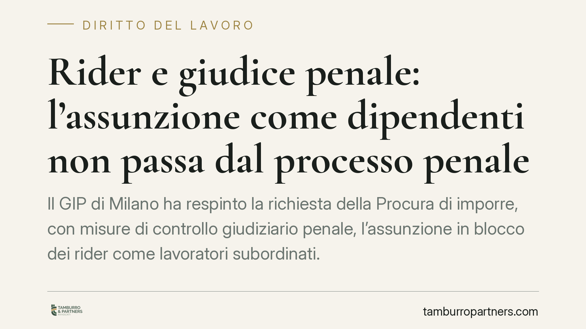

Rider e giudice penale: l'assunzione come dipendenti non passa dal processo penale
Il GIP di Milano ha respinto la richiesta della Procura di imporre, con misure di controllo giudiziario penale, l'assunzione in blocco dei rider come lavoratori subordinati. La decisione ribadisce un confine: reprimere lo sfruttamento è cosa diversa dal qualificare il rapporto di lavoro, compito che resta al giudice del lavoro, caso per caso.

Il fatto
La Procura di Milano aveva chiesto di utilizzare gli strumenti del controllo giudiziario penale per ottenere l'inquadramento come dipendenti di un'ampia platea di rider operanti per una piattaforma di consegne. La richiesta si inseriva in un'indagine sullo sfruttamento della manodopera e vedeva coinvolte anche le organizzazioni sindacali.
Il GIP del Tribunale di Milano ha respinto l'istanza. La pronuncia, allo stato, non risulta ancora massimata: se ne conoscono il contenuto e la data di riferimento (settembre 2026), ma gli estremi completi (numero di provvedimento) non sono ad oggi pubblicati. Il dato va tenuto presente prima di trarne conclusioni di sistema.
Inquadramento normativo
Il nodo è la distinzione tra due piani.
Sul piano penale, la repressione dello sfruttamento del lavoro tutela il diritto a una retribuzione proporzionata e sufficiente (art. 36 Cost.) e presidia condizioni di lavoro dignitose. Qui il giudice penale accerta condotte illecite e ne reprime gli effetti, ma non ha il compito di ridisegnare la natura giuridica del rapporto.
Sul piano giuslavoristico, la qualificazione del rapporto passa per l'art. 2094 c.c., che definisce il lavoratore subordinato, e per l'art. 2 del d.lgs. 81/2015. Quest'ultimo non trasforma automaticamente ogni rider in dipendente: applica la disciplina del rapporto di lavoro subordinato alle collaborazioni etero-organizzate, cioè a prestazioni prevalentemente personali e continuative le cui modalità di esecuzione sono organizzate dal committente. La formulazione è stata incisa dal d.l. 101/2019, che ha ampliato l'ambito applicativo (eliminando i riferimenti restrittivi al tempo e al luogo della prestazione e valorizzando l'avverbio «anche»). Resta però una valutazione da compiere in concreto, sulla base delle modalità effettive della singola prestazione.
Sullo sfondo, l'art. 41 Cost. tutela la libertà di iniziativa economica, che non può essere compressa oltre i limiti fissati dalla legge.
Perché la decisione conta
Il GIP ha tenuto separati i due piani. Anche laddove emergano profili di sfruttamento penalmente rilevanti, non ne discende in modo automatico che tutti i rider debbano essere assunti come subordinati. La qualificazione è un accertamento che spetta al giudice del lavoro, ed è per sua natura individuale: dipende da come si è svolta ciascuna prestazione, non da una fotografia collettiva della piattaforma.
È un principio di garanzia in entrambe le direzioni. Da un lato, evita che lo strumento penale diventi una scorciatoia per riscrivere in blocco migliaia di rapporti. Dall'altro, non lascia impuniti i comportamenti che ledono la dignità del lavoratore, che restano perseguibili sul loro terreno proprio.
Va detto con chiarezza: si tratta di una decisione di merito su un caso specifico, non di un principio consolidato. Non esclude che, in sede lavoristica, singoli rapporti vengano riqualificati come subordinati o come collaborazioni etero-organizzate.
Implicazioni pratiche
Per le piattaforme, la decisione riduce il rischio di provvedimenti penali che impongano riqualificazioni generalizzate, ma non elimina l'esposizione sul fronte lavoristico e su quello dello sfruttamento. I due contenziosi possono correre in parallelo.
Per i rider, la via del giudice del lavoro resta lo strumento per far valere la natura del proprio rapporto. La tutela penale contro lo sfruttamento opera indipendentemente da come venga qualificato il contratto.
Per chi organizza reti di lavoro autonomo, il messaggio è che la sostanza delle modalità operative pesa più della qualificazione formale. Un audit interno delle singole prestazioni aiuta a intercettare i profili a rischio di etero-organizzazione.
Cosa fare in concreto
- Documentate le modalità effettive della prestazione: gestione dei turni, uso della geolocalizzazione, sistemi di ranking, applicazione di penali e criteri di assegnazione degli ordini. Sono gli indici che il giudice del lavoro valuta.
- Distinguete i due fronti: la difesa penale su eventuali contestazioni di sfruttamento e la posizione giuslavoristica seguono logiche diverse e vanno gestite separatamente.
- Verificate la coerenza tra clausole contrattuali e prassi operativa: una discrasia tra contratto e realtà espone alla riqualificazione.
- Conservate i dati di piattaforma nel rispetto della normativa privacy: sono elementi centrali in entrambi i procedimenti.
- Aggiornate i modelli organizzativi tenendo conto dell'evoluzione normativa sull'art. 2 d.lgs. 81/2015 e delle pronunce di merito che si consolideranno sul tema.
---
Contributo informativo a cura di Tamburro & Partners - Avv. Giuseppe Tamburro. Non costituisce parere legale.
Ogni storia di lavoro ha i suoi tempi.
Se gestisci HR e vuoi un confronto su contenzioso, ispezioni o licenziamenti, scrivi allo studio. Ti rispondiamo entro un giorno lavorativo.